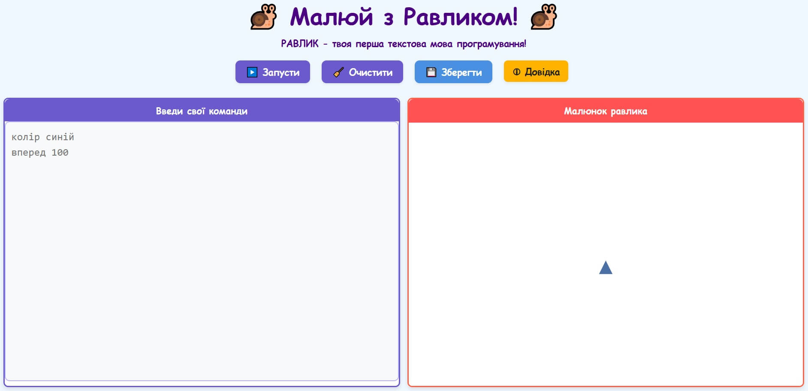
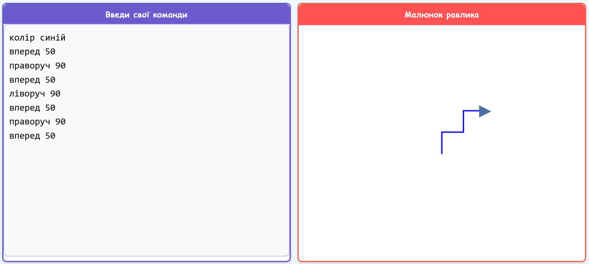
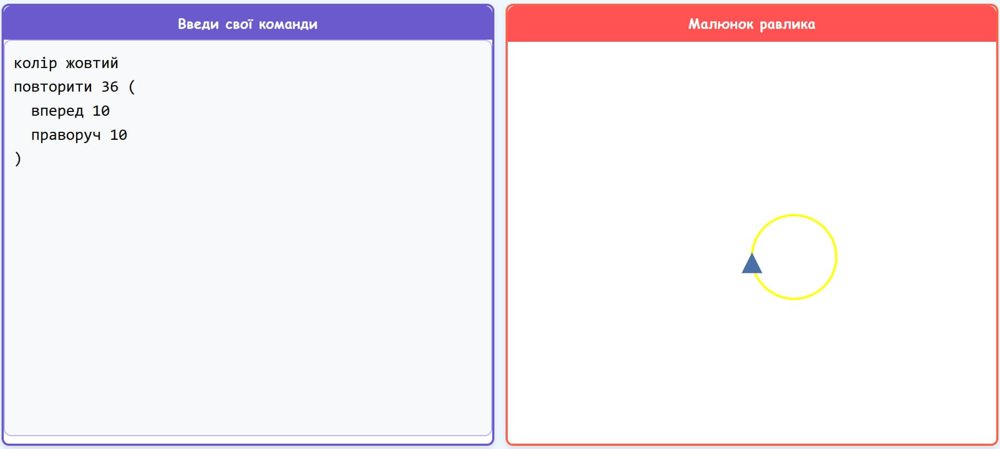

Велика ідея: Знайомство. Перед тим як керувати Равликом, важливо зрозуміти, хто він, де він живе і як ми з ним будемо працювати.
Що важливо зрозуміти
Ти вже вмієш: бути допитливим — цього достатньо для старту.
Сьогодні дізнаєшся: що таке програмування, хто такий Равлик і де відбуватиметься вся наша робота.
Головне питання уроку: що саме означає "програмування" і як у цьому допомагає Равлик?
Що таке програмування
Уяви, що ти хочеш навчити свого робота-помічника виконувати різні завдання: прибирати іграшки, малювати картину або навіть танцювати.
Щоб робот тебе зрозумів, ти маєш дати йому дуже чіткі інструкції, крок за кроком. Ці інструкції, написані спеціальною мовою,
яку розуміє комп'ютер, називаються кодом. А створення таких інструкцій — це кодування або програмування.
Програмування — це ніби розмова з комп'ютером. Ти кажеш йому, що робити, а він слухняно виконує.
Наш друг — Равлик
Ось він, наш головний герой — Равлик! Він дуже любить малювати, але йому потрібна твоя допомога, щоб знати, куди рухатися і що робити. Твої команди для Равлика — це твій перший код!
Дім Равлика
А це місце, де живе та працює наш герой — онлайн-редактор! Саме тут ми будемо давати нашому Равлику команди, які він буде виконувати та створювати зображення.

Тут ти зможеш помилятися, перевіряти здогадки, змінювати числа, шукати кращі рішення і створювати власні проєкти.
Відкрий редактор. Натисни будь-яку клавішу, напиши будь-що і натисни "Запустити". Подивись, що станеться.
Ти ще не знаєш жодної команди — і це нормально. Равлик або щось намалює, або покаже підказку про помилку. В обох випадках це корисно: ти вже бачиш, як середовище реагує на твої дії.
Запам'ятай: помилка — це не провал. Це інформація. Так само, як коли вчишся їздити на велосипеді: впав — зрозумів, що треба виправити.
Знайомство з Равликом потрібне, щоб одразу зрозуміти, як ми будемо мислити та працювати на всьому курсі.
Ти бачиш мету: не просто вчиш команди, а вчишся керувати об'єктом і перевіряти свої ідеї.
Ти розумієш середовище: де писати код, де дивитися результат і де можна сміливо помилятися.
🗺️ Твій шлях
Ось що тебе чекає. Кожен урок — це одна нова ідея і одна нова команда. Не поспішай: важливо розуміти кожен крок, перш ніж рухатися далі.
Урок
Велика ідея
Нова команда
1
Команда
вперед, назад
2
Напрямок
праворуч, ліворуч
3
Стан
колір
4
Цикл
повторити
5
Геометрія
дослідження чисел у циклі
6
Контроль
підняти, опустити, перейти в
7
Побудова
створити
8
Рішення
якщо, інакше
9
Гра
грати, якщо клавіша
Не поспішай. Важливо розуміти, а не просто прогортати уроки.
Урок 1: Перша команда 🚀
Велика ідея: Команда. Равлик робить саме те, що ти написав.
Що сьогодні важливо зрозуміти
Ти вже знаєш: що таке програмування та хто такий Равлик.
Ти вже вмієш: поки що нічого, і це нормально.
Сьогодні навчишся: рухати Равлика і бачити, як код перетворюється на лінію.
Головне питання уроку: як дати комп'ютеру настільки точну команду, щоб він не здогадувався, а виконував?
👥 Спочатку без комп'ютера
Один учень — "Равлик", інший — "програміст". Програміст дає команди вголос, а Равлик виконує їх буквально: не думає, не здогадується, не виправляє.
Спробуйте: "крок вперед", "повернись праворуч", "три кроки вперед". Доведіть Равлика від дошки до дверей, а потім поміняйтеся ролями.
Що помітиш: неточна команда дає неправильний результат. Комп'ютер поводиться так само.
🔁 Зроби це і на наступних уроках
Unplugged-гра "програміст і Равлик" працює для будь-якої нової команди. Перед Уроком 2 спробуй додати команди "повернись на 90°" і "повернись на 45°". Перед Уроком 4 — команду "повтори 4 рази: крок вперед, поворот". Тіло запам'ятовує те, що голова ще не формалізувала.
Нова команда: вперед
вперед 100
Равлик пройде вперед на 100 кроків і намалює лінію.
Скільки це — 100 кроків?
Полотно Равлика приблизно 500 кроків завширшки. Тобто вперед 100 — це п'ята частина полотна. Спробуй вперед 500 — куди дійде Равлик?
Поворот завжди відбувається від поточного напряму Равлика. Уяви, що Равлик стоїть і дивиться вгору. Після команди праворуч 90 він дивитиметься направо.
⚠️ Важливо: Равлик повертає відносно себе
Стань обличчям до стіни. Повернись праворуч. Тепер ти дивишся не туди, куди дивився раніше, — ти повернувся відносно себе. Равлик робить те саме.
Тому два рази праворуч 90 — це не "дивитися праворуч від мене", а "ще раз повернутися від свого поточного напряму". Після двох поворотів по 90° Равлик дивитиметься вниз, а не праворуч.
🟢 Простий: намалюй три сходинки, де кожна однакового розміру.
🟡 Середній: намалюй п'ять сходинок, де кожна наступна на 10 вища. Запиши числа до запуску.
🔴 Складний: намалюй сходинки, які йдуть спочатку вгору, а потім вниз — як гора. Скільки команд тобі знадобиться? Чи є спосіб скоротити код?
✅ Я вмію
Можу повторити: повернути Равлика на 90°.
Можу змінити: передбачити, як зміниться шлях при іншому куті.
Можу придумати своє: зробити власну фігуру з рухів і поворотів.
Подумай:
Уяви годинникову стрілку. Якщо Равлик дивиться на 12 — праворуч 90 повертає його на 3, ще праворуч 90 — на 6, ще — на 9, ще — назад на 12. Скільки разів по 90° потрібно, щоб повернутися до старту? А якщо поворот 45°?
Що означає праворуч 360?
Яку фігуру можна побудувати лише з вперед і поворотів?
Урок 3: Кольоровий Равлик 🌈
Велика ідея: Стан. Равлик запам'ятовує колір, доки ти його не зміниш.
Що сьогодні важливо зрозуміти
Ти вже вмієш: рухати і повертати Равлика.
Сьогодні навчишся: змінювати колір малювання і думати про "поточний стан".
Головне питання уроку: що змінюється не в одному рядку, а зберігається далі?
Нова команда: колір
Щоб змінити колір, яким малює Равлик, використовуй команду колір і додай назву кольору.
колір синій
Після цієї команди всі наступні лінії будуть сині, поки не з'явиться інший колір.
Стан — це те, що Равлик "пам'ятає"
Уяви, що Равлик тримає фломастер. Поки ти не написав колір синій — він тримає чорний і малює чорним. Пишеш колір синій — він бере синій фломастер. Усе, що намалював раніше, лишається чорним. Усе, що намалює тепер — синє. Фломастер у руці і є стан.
Стан — це те, що програма пам'ятає між командами. Поточний колір, чи піднятий олівець, де зараз знаходиться Равлик — усе це стан. Команда колір не просто фарбує одну лінію — вона змінює стан програми для всього, що йде після неї.
Це і є стан — і він зустрічається скрізь.
Де ще є стан у житті? Вимикач світла: він "пам'ятає", увімкнений чи вимкнений. Світлофор: він "пам'ятає", яке зараз світло. Ти сам: ти "пам'ятаєш", голодний ти чи ні — і це впливає на твої наступні дії.

Равлик знає багато кольорів: червоний, зелений, синій, жовтий, чорний, жовтогарячий, фіолетовий, рожевий, коричневий, блакитний, кораловий, смарагдовий, золотий та інші, а також веселка.
Команда колір змінює, чим малює Равлик. А фон змінює саме полотно — тло, на якому малюєш.
фон блакитний
колір жовтий
вперед 100
Спочатку передбач, що побачиш. Потім спробуй: що змінюється, якщо написати фон до малювання? А якщо після? Чи можна намалювати жовту лінію на жовтому тлі — і що вийде?
🔮 Спробуй передбачити
колір червоний
вперед 60
колір синій
вперед 60
колір червоний
вперед 60
Скільки ліній? Якого кольору кожна? Що буде, якщо прибрати останню команду колір червоний?
💡 Для чого це потрібно?
Колір — це перший крок до розуміння стану: щось змінюється зараз, але впливає і на наступні дії.
Ти вчишся бачити стан програми: поточний колір зберігається, поки його не змінять.
Ти розвиваєш творчість: колір може передавати настрій, ритм і ідею.
Ти помічаєш причинно-наслідкові зв'язки: один рядок коду змінює все, що йде після нього.
🎨 Завдання
Намалюй три лінії трьома різними кольорами. Кожну — в іншому напрямку.
Поглянь на порядок команд: коли саме змінюється колір — до руху чи після нього?
Пояснення
Тут немає синтаксичної помилки — код виконається без повідомлення про помилку. Але результат може не збігатися з очікуванням: перша лінія лишається чорною, бо колір синій стоїть після першого руху. Якщо хочеш, щоб обидві лінії були сині — постав колір синій на самому початку.
Це важлива особливість стану: команда колір впливає лише на те, що йде після неї.
🎨 Спробуй по-своєму
Намалюй два схожі малюнки різними кольорами: один "радісний", другий "спокійний".
Покажи свої два малюнки однокласнику. Нехай він угадає, який "радісний", а який "спокійний" — і поясни, які кольори ти обрав і чому.
🟢 Простий: намалюй три лінії трьома різними кольорами. Перевір: чи правильно стоять команди колір?
🟡 Середній: намалюй квадрат, де кожна сторона іншого кольору. Підказка: команда колір має стояти перед кожним вперед.
🔴 Складний: намалюй "веселковий" малюнок — щонайменше 6 різних кольорів у правильному порядку (червоний, жовтогарячий, жовтий, зелений, синій, фіолетовий). Придумай, яку форму матиме твоя веселка.
✅ Я вмію
Можу повторити: змінити колір командою колір синій.
Можу змінити: передбачити колір кожної лінії.
Можу придумати своє: використати колір як частину задуму.
Подумай:
Що буде, якщо написати колір синій один раз на початку?
Де ще в житті є стан, який зберігається і змінюється?
Урок 4: Повторюємо команди 🔁
Велика ідея: цикл. Комп'ютер може виконувати нудну роботу за тебе.
Що сьогодні важливо зрозуміти
Ти вже вмієш: рухати, повертати й змінювати колір.
Сьогодні навчишся: повторювати команди коротким кодом.
Головне питання уроку: як змусити комп'ютер багато разів робити одну й ту саму корисну дію?
Чому цикли змінюють усе
Без циклу квадрат — це багато рядків, з циклом — кілька. Без циклу коло майже неможливе, з циклом — стає простим правилом.
Нова команда: повторити
повторити 4 (
вперед 100
праворуч 90
)
Між числом і ( має бути пробіл. Закривна ) обов'язкова.
Не читай відповідь одразу — спочатку спробуй сам. Дій покроково:
Крок 1. Запусти квадрат і порахуй: скільки разів Равлик повернув? Скільки градусів разом? (4 × 90 = ?)
Крок 2. Тепер спробуй трикутник: повторити 3 ( вперед 100 праворуч ? ). Яке число треба підставити замість ?, щоб фігура замкнулась? Поміркуй: скільки градусів разом має зробити Равлик?
Крок 3. Заповни таблицю — передбач, потім перевір:
Фігура
Кількість сторін
Кут (моє передбачення)
Кут (перевірено)
Квадрат
4
90
90
Трикутник
3
___
___
П'ятикутник
5
___
___
Шестикутник
6
___
___
Правило (відкрий після того, як заповниш таблицю)
Для замкненої правильної фігури з N сторін кут повороту = 360° ÷ N. Равлик завжди разом повертає рівно на одне повне коло.
Зв'язок із годинником
Пам'ятаєш метафору годинника з Уроку 2? Коло — це 360°. Рівностороння фігура завжди повертає рівно на одне повне коло — незалежно від кількості сторін. Квадрат: 4 × 90° = 360°. Трикутник: 3 × 120° = 360°. П'ятикутник: 5 × 72° = 360°. Завжди — одне повне коло.
🐛 Знайди помилку
повторити 3 (
вперед 100
праворуч 90
)
Відповідь
Для рівностороннього трикутника треба поворот 120, а не 90.
🎨 Спробуй по-своєму
🟢 Простий: намалюй правильний шестикутник. Підрахуй кут за правилом 360÷N до запуску.
🟡 Середній: намалюй три квадрати різного розміру в різних кольорах. Використовуй один і той самий код повторити — тільки міняй числа.
🔴 Складний: намалюй квітку — квадрат всередині квадрата всередині квадрата (три вкладені квадрати). Підказка: вони мають бути однаково центровані. Як це зробити?
Велика ідея: геометрія. Якщо змінювати числа в одному й тому самому правилі, народжуються різні фігури.
Що сьогодні важливо зрозуміти
Ти вже вмієш: малювати правильні багатокутники.
Сьогодні навчишся: помічати, як одне число змінює розмір, а інше — саму форму.
Головне питання уроку: яке число робить фігуру більшою, а яке змінює її вигляд?
Малюємо коло
колір жовтий
повторити 36 (
вперед 10
праворуч 10
)
Равлик робить багато маленьких кроків і багато маленьких поворотів. Разом це дає повне коло: 36 × 10° = 360°.
Знову годинник
Пам'ятаєш: для замкненої фігури Равлик завжди повертає рівно на 360°? Коло — не виняток: 36 × 10° = 360°. Різниця лише в тому, що кожен крок дуже маленький — тому кути майже непомітні і фігура виглядає як крива, а не як багатокутник. Більше повторень → менший кут → плавніша крива.

🔬 Лабораторія плавності
Усі три коди нижче малюють повне коло (разом 360°). Спробуй кожен і порівняй:
Запитання для дослідження (відповідай після запуску, не до):
Що спільного у всіх трьох? (Порахуй: скільки градусів разом?)
Чим вони відрізняються зовні?
Який результат найбільш схожий на справжнє коло і чому?
🔮 Спробуй передбачити
Порівняй два коди. Не запускай одразу — спершу спробуй уявити результат.
повторити 36 ( вперед 10 праворуч 10 )
повторити 12 ( вперед 10 праворуч 30 )
Який малюнок буде більш схожим на коло? Який матиме помітніші кути? Що зміниться, якщо збільшити лише довжину кроку?
💡 Для чого це потрібно?
У цьому уроці ти вже не просто виконуєш команди, а досліджуєш, як числа керують формою.
Ти вчишся абстракції: думаєш не про кожну лінію окремо, а про правило побудови.
Ти бачиш математику в дії: кут і кількість повторів разом створюють фігуру.
Ти працюєш як дослідник: змінюєш одну змінну й дивишся, що змінюється в результаті.
🔬 Лабораторія: вплив числа на форму
Працюй як дослідник: змінюй лише одне число за раз у коді повторити 36 ( вперед 10 праворуч 10 ). Спочатку спробуй передбачити, потім перевір, а потім сформулюй висновок.
⭐ Відкрий зірку сам
повторити 5 ( вперед 100 праворуч 72 )
Спочатку вийде правильний п'ятикутник. А що станеться, якщо замінити 72 на 144? Чому лінія раптом почне "перестрибувати" через вершини?
Кут 144° = 72° × 2: Равлик "перестрибує" через одну вершину і виходить зірка. А що буде з сімкою?
повторити 7 ( вперед 100 праворуч ??? )
Спробуй кут 154 і кут 205. Який дає зірку, а який — просто многокутник? Чому?
Підказка
Зірка виходить, коли Равлик "перестрибує" через вершини, а не йде до кожної по черзі. Спробуй різні кути і подивись, коли лінії починають перетинатися.
🔍 Що тут цікавого?
повторити 36 (
вперед 10
праворуч 11
)
Спочатку запусти і подивись, що вийде. Потім подумай: кут змінився лише на 1° — чому результат такий несподіваний?
Пояснення
36 × 11° = 396°. Равлик повертає трохи більше, ніж одне повне коло. Тому шлях не замикається — він трохи "зсувається" з кожним повторенням. Це не помилка, а цікавий ефект: маленька зміна кута дає великий вплив на форму.
Спробуй поекспериментувати: праворуч 9, праворуч 11, праворуч 13. Як змінюється малюнок? Який з них найкрасивіший, на твій погляд?
🎨 Спробуй по-своєму
🟢 Простий: намалюй три кола різного розміру. Зміни лише довжину кроку, кількість повторів залишай 36.
🟡 Середній: намалюй сонце — коло плюс промені. Промені — це окремі лінії навколо кола. Де розмістити кожен промінь?
🔴 Складний: поекспериментуй із "нецілими" колами — кутами 9°, 11°, 13° замість 10°. Що відбувається? Поясни своїми словами, чому малюнок не замикається.
Можу змінити: передбачити вплив числа на форму й плавність.
Можу придумати своє: створити візерунок через експеримент із числами.
Подумай:
Яке число найбільше впливає на розмір?
А яке — на форму?
Як би ти пояснив молодшому учню, чому 144° дає зірку?
Урок 6: Підніми олівець ✏️🖐️
Велика ідея: контроль. Ти вирішуєш, коли Равлик малює, а коли тільки рухається.
Що сьогодні важливо зрозуміти
Ти вже вмієш: будувати фігури й візерунки.
Сьогодні навчишся: переміщати Равлика без сліду і точно розкладати об'єкти на полотні.
Головне питання уроку: як відокремити рух від малювання?
Нові команди
Крок 1: Олівець
підняти
вперед 60
опустити
підняти — Равлик рухається без сліду. опустити — малювання вмикається знову. Спробуй спочатку лише це, без координат.
✏️ Мінімальний експеримент
Запусти цей код і подивись, де є лінія, а де — пропуск:
вперед 50
підняти
вперед 30
опустити
вперед 50
Скільки видимих ліній? Де пропуск? Чи збігається з твоїм передбаченням?
Крок 2: Координати
підняти
перейти в 150 0
опустити
перейти в X Y переміщує Равлика в точку на полотні. Важливо: перед перейти майже завжди потрібен підняти, інакше лінія залишиться між старою і новою позицією.
Полотно — як карта міста. Центр — точка (0, 0). Перше число після "в" — це відстань праворуч або ліворуч від центру. Друге число — вгору або вниз.
Команда
Куди потрапить Равлик
перейти в 0 0
Точно в центр полотна
перейти в 100 0
100 кроків праворуч від центру
перейти в 0 100
100 кроків вгору від центру
перейти в -100 -100
Ліворуч і вниз від центру
Як читати координати
Перше число — це ліво/право (X): позитивне — праворуч, від'ємне — ліворуч. Друге число — це вгору/вниз (Y): позитивне — вгору, від'ємне — вниз. Центр полотна завжди (0, 0). Спробуй: перейти в 200 200 — це правий верхній кут. перейти в -200 -200 — лівий нижній.
Порада: якщо не знаєш, де знаходиться точка — просто спробуй перейти в X Y і подивись.
Намалюй три фігури в різних місцях полотна без жодних з'єднувальних ліній.
Виклик для тих, хто хоче більше: постав Равлика точно в чотири кути уявного квадрата — у точки (100, 100), (-100, 100), (-100, -100), (100, -100). У кожному куті намалюй маленьке коло. Жодних ліній між ними.
🟢 Простий: намалюй пунктирну лінію з 5 відрізків. Підказка: чергуй вперед 30 → підняти → вперед 15 → опустити.
🟡 Середній: намалюй три квадрати в різних кутах полотна без жодної з'єднувальної лінії між ними.
🔴 Складний: намалюй просте обличчя: два ока (маленькі кола), ніс (точка або крапка) і посмішку (дуга). Усі елементи — в правильних позиціях на полотні.
✅ Я вмію
Можу повторити: перемістити Равлика без сліду.
Можу змінити: передбачити, де буде лінія, а де порожнеча.
Можу придумати своє: розкладати фігури точно там, де хочу.
Подумай:
Що буде, якщо підняти олівець на початку і більше не опускати?
Спробуй підняти, потім перейти в 0 0, потім опустити і вперед 50. Де на полотні з'явилася лінія?
Урок 7: Будуємо власні команди 🏗️
Велика ідея: побудова. Ти можеш зберігати важливі числа і створювати для Равлика свої власні команди.
Що сьогодні важливо зрозуміти
Ти вже вмієш: користуватися основними командами Равлика.
Сьогодні навчишся: спочатку зберігати число у змінній, а потім використовувати це у власних командах.
Головне питання уроку: як не переписувати один і той самий код знову і знову?
Змінна — скринька для числа
створити сторона = 100
вперед сторона
сторона = 150
вперед сторона
Уяви дошку оголошень у класі. На ній написано: "сторона = 100". Коли ти пишеш сторона = 150 — ти стираєш старе і пишеш нове. Стара цифра зникає. Дошка завжди показує лише одне поточне значення.
Тому сторона = сторона + 20 означає: "Прочитай поточне значення з дошки, додай 20, і запиши нове число назад."
⚠️ Змінна vs. стан: що спільного?
Пам'ятаєш фломастер у руці з Уроку 3? колір — це і є зміна фломастера. Змінна — те саме, але ти сам вигадуєш їй ім'я і сам вирішуєш, що зберігати: число, рахунок, розмір, швидкість. колір — це вбудований стан Равлика. Змінна — це твій власний стан, який ти придумав.
Функція — твоя власна команда
створити квадрат(с) (
повторити 4 ( вперед с праворуч 90 )
)
квадрат(50)
квадрат(100)
Тут ти ніби вчиш Равлика новому слову: коли він чує квадрат(50), то вже знає, що треба робити.
Хороше ім'я функції — це вже половина роботи
Коли ти пишеш створити квадрат(с) — ти вчиш Равлика нового слова. Хороше ім'я описує що робить функція, а не як. квадрат — хороше ім'я. команда1 або qqq — погані: ти сам забудеш, що це означає, вже через день.
🔗 Змінна + Функція = Гнучкість
Змінна зберігає число. Функція — це правило, що використовує це число. Разом вони дозволяють писати код один раз і легко змінювати результат. Порівняй:
# Без змінної і функції — треба переписувати все:
повторити 4 ( вперед 50 праворуч 90 )
повторити 4 ( вперед 100 праворуч 90 )
повторити 4 ( вперед 150 праворуч 90 )
# З функцією — одне правило, різні числа:
створити квадрат(с) ( повторити 4 ( вперед с праворуч 90 ) )
квадрат(50)
квадрат(100)
квадрат(150)
Перший варіант — три окремі інструкції. Другий — одне правило і три виклики. Якщо захочеш змінити форму квадрата — у першому варіанті треба міняти в трьох місцях, у другому — лише в одному.
Можу повторити: створити змінну і функцію за зразком.
Можу змінити: передбачити, як зміна змінної вплине на малюнок.
Можу придумати своє: написати власну команду і використати її кілька разів.
Подумай:
Навіщо змінній зрозуміле ім'я?
Чим власна команда краща за копіювання одного й того самого коду?
Урок 8: Равлик приймає рішення 🤔
Велика ідея: рішення. Програма може діяти по-різному залежно від ситуації.
Що сьогодні важливо зрозуміти
Ти вже вмієш: будувати, повторювати і змінювати стан.
Сьогодні навчишся: писати програми, які перевіряють умову.
Головне питання уроку: як змусити програму не просто виконувати, а ще й обирати?
Умова — це питання з відповіддю "так" або "ні"
Комп'ютер не вміє відповідати "може бути" або "залежить". Він завжди обирає між двома варіантами:
"Равлик на краю?" — так або ні.
"n парне?" — так або ні.
"n більше 5?" — так або ні.
Умова — не команда, а питання
Різниця між вперед 5 і якщо край: перша команда завжди щось робить. Друга спочатку запитує ("чи правдиво це?") і лише потім вирішує, чи виконувати вміст дужок. Якщо відповідь "ні" — код у дужках просто пропускається.
Це і є умова. Команда якщо перевіряє умову і виконує код лише тоді, коли відповідь "так".
Нова команда: якщо
якщо край (
праворуч 180
)
Команди в дужках виконуються тільки тоді, коли умова правдива.
Важливо
Ця перевірка виконується лише один раз і одразу зупиняється. Щоб вона перевіряла постійно — треба помістити її всередині циклу або у блок грати. Спробуй:
повторити 200 (
вперед 5
якщо край ( праворуч 180 )
)
інакше — запасний план
створити n = 2
якщо n % 2 = 0 (
колір синій
) інакше (
колір червоний
)
Якщо число парне — буде синій. Якщо непарне — червоний. Спробуй змінити n = 2 на n = 3 і перевір, чи зміниться колір.
Можу змінити: передбачити наслідок умови для кольору чи руху.
Можу придумати своє: зробити власне правило "якщо... то...".
🔧 Як перевірити, чи спрацьовує умова
Якщо не знаєш, чи виконується якщо — додай тимчасово зміну кольору і подивись:
якщо n % 2 = 0 (
колір синій
) інакше (
колір червоний
)
вперед 5
Якщо бачиш тільки червоний — гілка якщо ніколи не виконується. Подивися на значення n. Цей прийом використовують справжні програмісти — він називається "відлагодження через колір".
Подумай:
Що робить програма, якщо умова хибна і інакше немає?
Чим якщо край відрізняється від якщо n = 5?
Спробуй написати умову, яка ніколи не виконується: якщо 1 = 2 ( колір синій ). Що станеться? А тепер навпаки — умову, яка завжди виконується: якщо 1 = 1 ( колір синій ). Чим це корисно?
Як пов'язані умови і стан? Підказка: якщо часто перевіряє стан програми (наприклад, значення змінної) і змінює інший стан (наприклад, колір).
Урок 9: Перша гра з клавіатурою 🎮
Велика ідея: гра. Програма працює без зупинки і постійно слухає, що робить гравець.
Що сьогодні важливо зрозуміти
Ти вже вмієш: працювати з умовами, циклами, змінними та функціями.
Сьогодні навчишся: запускати програму, яка не просто малює, а реагує на твої клавіші.
Головне питання уроку: чим жива гра відрізняється від малюнка, який просто виконався і зупинився?
Різниця між повторити і грати
повторити 100
грати
Коли зупиняється
Після N разів
Лише коли ти зупиниш
Реагує на клавіші
Ні (не призначений для цього)
Так (перевіряє між кожним кадром)
Для чого
Малюнок
Гра
🎮 Три компоненти будь-якої гри
Перед тим як кодувати — подумай про три речі:
Рух — як гравець керує персонажем? (клавіші, швидкість)
Правила — що дозволено, а що ні? (відбиття від краю, заборонені зони)
Мета — що треба зробити, щоб "перемогти"?
У мінімальній грі нижче є рух і є правило. Мети поки немає. Що могло б бути цікавою метою для твоєї гри?
Перш ніж писати код — дай відповіді на ці три питання на папері або вголос. Тільки тоді відкривай редактор. Програмісти називають це "проєктуванням перед кодуванням".
Нова команда: грати
грати (
якщо клавіша "вгору" ( вперед 5 )
якщо клавіша "вниз" ( назад 5 )
якщо клавіша "ліво" ( ліворуч 10 )
якщо клавіша "право" ( праворуч 10 )
)
Правила: один блок грати у програмі; змінні та функції — поза ним; зупинка через кнопку "Зупинити" або Esc. Усе, що має перевірятися постійно, треба писати всередині грати.
Як читати блок грати
Уяви, що блок грати — це серце, яке б'ється. Кожен "удар" — це один кадр: програма перевіряє всі умови всередині (яка клавіша натиснута, чи торкнувся краю) і виконує відповідні команди. Потім — наступний удар. І так — поки ти не натиснеш "Зупинити". Тому все, що має реагувати на гравця, має бути всередині грати.
створити швидкість = 2
грати (
якщо клавіша "вгору" (
вперед швидкість
швидкість = швидкість + 1
)
якщо клавіша "вниз" ( назад 4 )
)
Що станеться зі змінною швидкість після п'яти натискань "вгору"? Чи буде Равлик рухатись однаково швидко весь час? Як його можна сповільнити?
💡 Для чого це потрібно?
Ігровий режим показує, що програма може жити в часі й реагувати на людину прямо під час роботи.
Ти переходиш від малюнка до взаємодії: тепер результат залежить від твоїх дій.
Ти вчишся мислити подіями: натиснув клавішу — програма відповіла.
Ти збираєш усе разом: команди, умови, змінні й правила починають працювати як одна система.
🎮 Завдання: мінімальна робоча гра
грати (
якщо клавіша "вгору" ( вперед 5 )
якщо клавіша "вниз" ( назад 5 )
якщо клавіша "ліво" ( ліворуч 10 )
якщо клавіша "право" ( праворуч 10 )
якщо край ( праворуч 180 )
)
Можу повторити: написати гру з керуванням стрілками.
Можу змінити: передбачити, як зміняться правила при іншій змінній.
Можу придумати своє: додати власну мету або поведінку гри.
Подумай наприкінці циклу:
Яку команду ти використовував найчастіше?
Яке завдання було найважчим?
Який момент тебе найбільше здивував?
Що хочеш навчитися робити далі?
Опиши свою найкращу програму за весь курс одним реченням — так, щоб зрозумів хтось, хто ніколи не бачив Равлика.
Поглянь на таблицю шляху з Уроку 0. Яка "велика ідея" виявилась найважливішою для тебе особисто? Яка — найважчою?
Якби ти додавав Урок 10 — що б ти хотів навчитися? Що ще, як тобі здається, вміє Равлик, але ти ще не знаєш?
🏁 Ти дійшов до кінця циклу
За ці 10 уроків ти навчився: давати точні команди, повертати і малювати фігури, змінювати стан програми, повторювати автоматично, досліджувати геометрію через числа, розділяти рух і малювання, зберігати числа у змінних, створювати власні команди, приймати рішення через умови, і будувати справжні ігри.
Це не просто "команди Равлика". Це фундаментальні ідеї, з яких складається будь-яка програма — від мобільного додатку до відеогри. Ти вже мислиш як програміст.